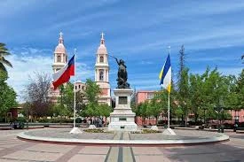

Franco Chumba
About Me
My name is Franco Chumba. I am currently studying software development online at BYU–Idaho. I am 23 years old, and I enjoy movies and music. I am excited about learning new skills and building a strong future in technology.
Rancagua, Chile

Rancagua is a city located in central Chile, about 87 kilometers south of Santiago. It is the capital of the O'Higgins Region and is well known for its strong connection to Chile's mining history, especially the nearby "El Teniente" copper mine, one of the largest underground copper mines in the world. The city has a warm Mediterranean climate, making it a productive agricultural area, and it is surrounded by vineyards, farms, and beautiful countryside. Rancagua also holds historical importance as the site of the Battle of Rancagua in 1814, a key event in Chile's fight for independence.